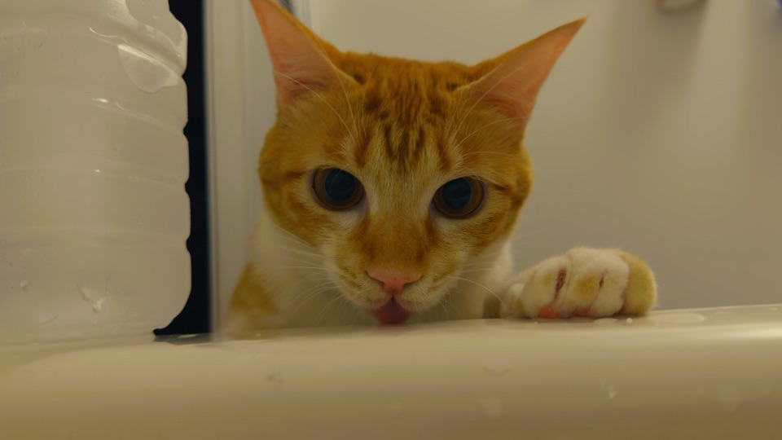
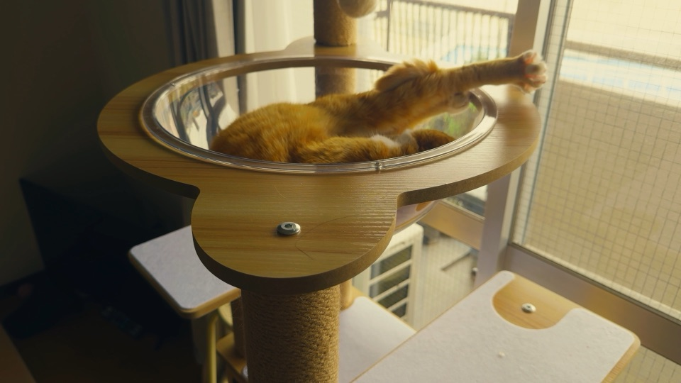

TORUTTO（トルット）
撮るだけで、投稿できるVlogに。
撮った順のまま、
App Storeで近日公開iPhone（iOS 26以上）本体無料
撮るのは好きなのに、編集で止まる。
- 並べる、切る、色、文字、音楽、書き出し。毎回ぜんぶを決めるのは、しんどい。
- 何でもできるアプリほど、何もしないまま閉じてしまう。
- 撮りためた日々が、形にならないまま、フォルダの中で眠っていく。
トルットは、撮ることと、一本に仕上げることを、
撮るだけで、一本になる。
撮った順のまま、素材がVlogの形に並びます。はじまりと終わり、タイトルとサムネイルまで、ひと続きで仕上がります。
アプリが勝手に並べ替えることはありません。元の素材も書き換えません。
選ぶのは、雰囲気だけ。
日常・やわらか・シネマ。雰囲気を1つ選ぶと、仕上がりの項目が一度にそろいます。
迷うところは、先に決めておきました。どれを選んでも、ちゃんと整います。
あなたの日々は、iPhoneの中に。
撮った動画も声も、iPhoneの外へは送りません。字幕の文字起こしも、顔を隠すための解析も、iPhoneの中で行います。
アカウント登録はありません。広告も、利用状況を追いかける仕組みも入っていません。

無料で、ちゃんと一本。
撮影から完成まで、無料のままで全部できます。1080p・10分までの一本に、ロゴは入りません。
月額の支払いもありません。

撮る、ととのう、完成。
- 撮る
- 3・5・10秒の短いクリップで、その日を撮ります。写真アプリの動画も取り込めます。
- ととのう
- 撮った順のまま、色と文字と音が重なります。元の素材は書き換えません。
- 完成
- 横16:9の一本を、写真アプリへ保存したり、共有したりできます。
無料と、TORUTTO+
無料
- 撮影から完成まで、全部の流れ
- 1080p・10分までの一本
- 完成動画にロゴは入りません
よくある質問
- 無料でどこまでできますか？
- 撮るところから一本を完成させるまで、全部の流れを無料で使えます。完成した動画は横16:9、1080p、10分までで、透かし（ロゴ）は入りません。内蔵のBGM 14曲、色のルック4つ（日和・灯・宵・凪）、雰囲気3つ（日常・やわらか・シネマ）、字幕、顔を隠す機能、あとから声を足す機能、まとめVlogも無料です。 続きを読む（無料でどこまでできますか？）
- 撮った動画はiPhoneの外へ送られますか？
- 送られません。撮った動画、声、コメント、字幕は、あなたのiPhoneの中だけで扱います。運営者のサーバーも、外部のAIサービスも使っていません。広告や、利用状況を追いかける仕組みもありません。 続きを読む（撮った動画はiPhoneの外へ送られますか？）
- TORUTTO+は買い切りですか？
- はい、買い切りです。一度買えば、月ごと・年ごとの支払いはありません。値段は、App Storeの購入画面に表示される価格です。TORUTTO+で増えるのは、4Kでの完成、10分より長い一本、自分のLUT（.cube）の読み込み、自分の曲の読み込みの4つです。 続きを読む（TORUTTO+は買い切りですか？）
App Storeで近日公開
iPhone（iOS 26以上）本体無料
撮ると、一本になる。